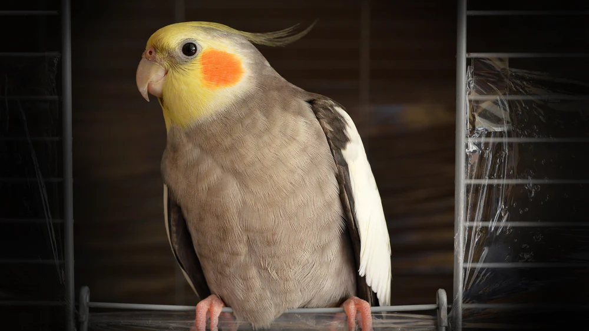

Cockatiel
The cockatiel (/ˌkɒkəˈtiːl/;[2] Nymphicus hollandicus), also known as the weero/weiro[3][4] or quarrion,[5][6] is a medium-sized[7] parrot that is a member of its own branch of the cockatoo family endemic to Australia. They are prized as household pets and companion parrots throughout the world and are relatively easy to breed compared to other parrots. As a caged bird, cockatiels are second in popularity only to the budgerigar.[8]
Taxonomy and etymology
The cockatiel is the only member of the genus Nymphicus. It was previously unclear whether the cockatiel is a crested parakeet or small cockatoo; however, more recent molecular studies have assigned it to its own subfamily, Nymphicinae. It is, therefore, now classified as the smallest subfamily of the Cacatuidae (cockatoo family). Cockatiels are native to Australia, favouring the Australian wetlands, scrublands, and bushlands.
Description
Sexual dimorphism
Colour mutations
The cockatiel's distinctive crest expresses the animal's emotional state. The crest is dramatically vertical when the cockatiel is startled or excited, gently oblique in its neutral or relaxed state, and flattened close to the head when the animal is angry or defensive. The crest is also held flat but protrudes outward in the back when the cockatiel is trying to appear alluring or flirtatious. When the cockatiel is tired, the crest is seen positioned halfway upwards, with the tip of the crest usually curling upward.[14] In contrast to most cockatoos, the cockatiel has long tail feathers roughly making up half of its total length. At 30 fto 33 cm (12 to 13 in), the cockatiel is the smallest of the cockatoos, which are generally larger at between 30 and 60 cm (12 and 24 in).
Breeds of cockatiels
- Lutino cockatiel
- Lutino
- Cockatiel
- Pearl cockatiel
- Pied cockatiel
- Cinnamon cockatiel

I like h2o
1/2 + 1/2= 1